Jetzt
Die aktuelle Dosis auf einem Bildschirm.
Der Bildschirm „Jetzt“ zeigt, was jetzt dran ist, was noch nicht markiert wurde und was als Nächstes kommt. Ein Tipp auf „Genommen“, fertig. Große Schrift und große Tasten, ohne Registrierung.
Gemacht für alle, die täglich Medikamente nehmen, und für alle, die sich um jemanden kümmern.
Jetzt
Der Bildschirm „Jetzt“ zeigt, was jetzt dran ist, was noch nicht markiert wurde und was als Nächstes kommt. Ein Tipp auf „Genommen“, fertig. Große Schrift und große Tasten, ohne Registrierung.
Die Erinnerung
Die Erinnerung kommt mit den Tasten „Genommen“ und „10 Min. verschieben“. Wähle, wie erinnert wird: dezent, wiederholend – bis du markierst – oder Alarm.
Vorrat
Zähle, was in der Packung ist, und Pilulário zeigt, wann sie leer ist. „Nachgekauft“ rechnet die neue Packung zum Rest dazu.
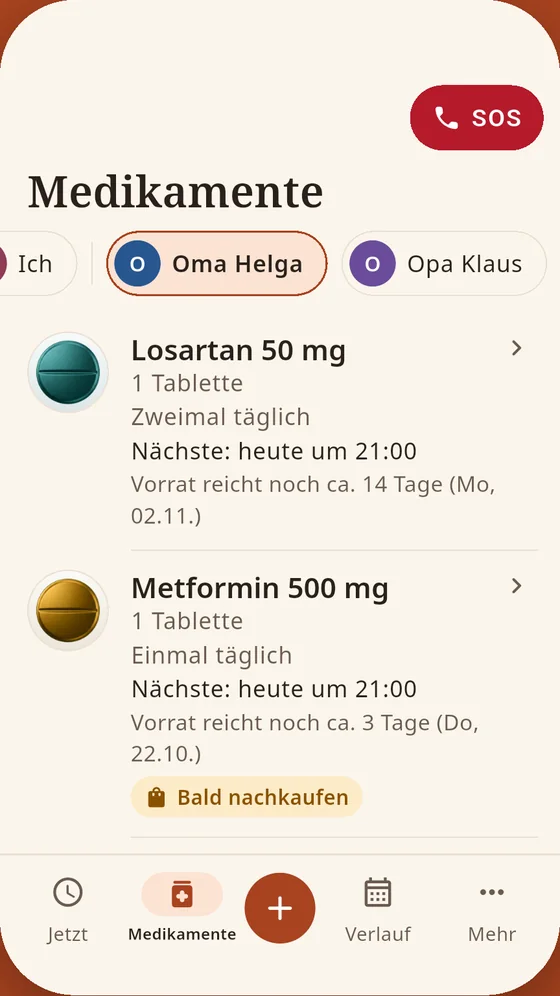
Verlauf
Tag, Woche und Monat: was genommen und was übersprungen wurde und von wem. Vertippt? Einfach rückgängig machen.
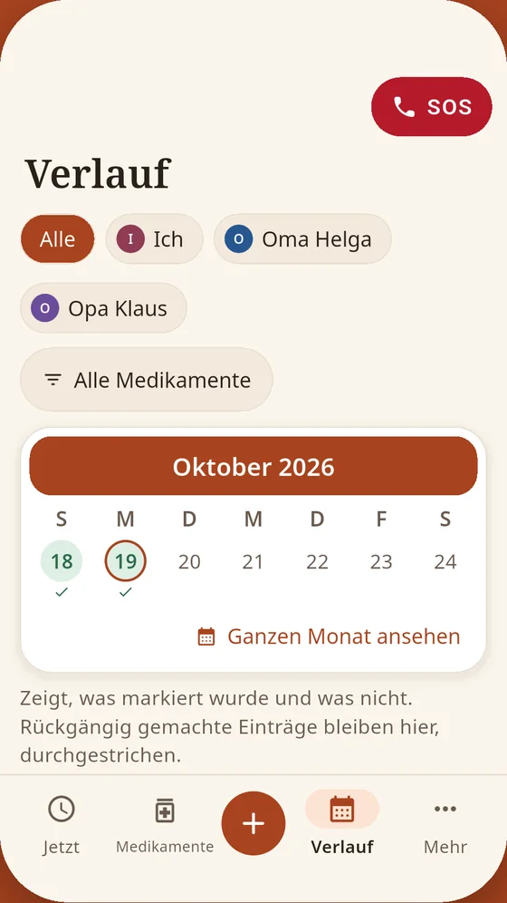
Für Pflegende
Jede Person mit eigener Farbe und eigenem Foto, eigenen Medikamenten und Erinnerungen. Notizen, Allergien und Hinweise hat im Blick, wer das Medikament gibt.
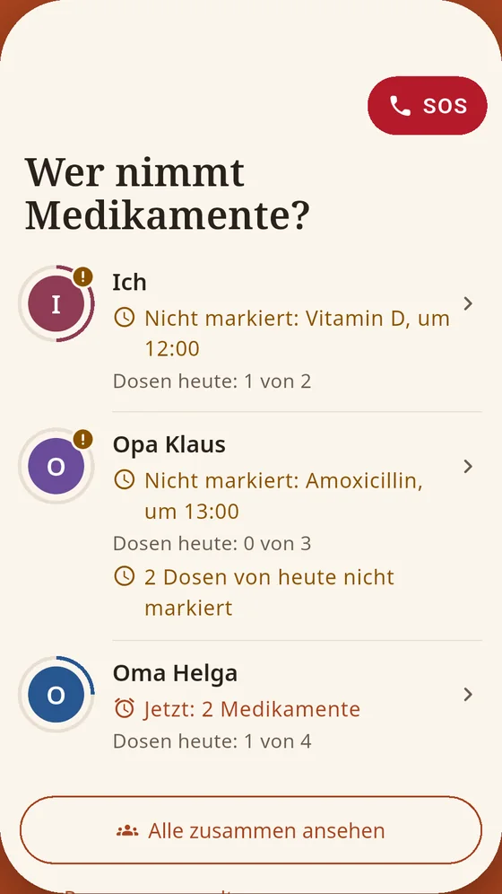
Pflegeübergabe
Jemand anderes übernimmt? Gib die Medikamente per Kamera weiter, ohne Internet, und erhalte den Bericht zurück, was gegeben wurde.
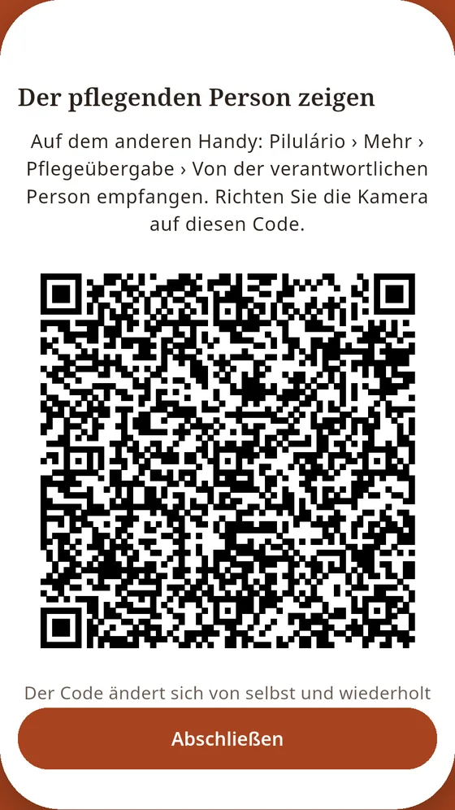
Erinnerungs-Check
Die App prüft, ob das Handy die Erinnerungen klingeln lässt, und zeigt, was einzustellen ist. Und die SOS-Taste hat die Notrufnummern und die Nummer der Person, die sich kümmert.
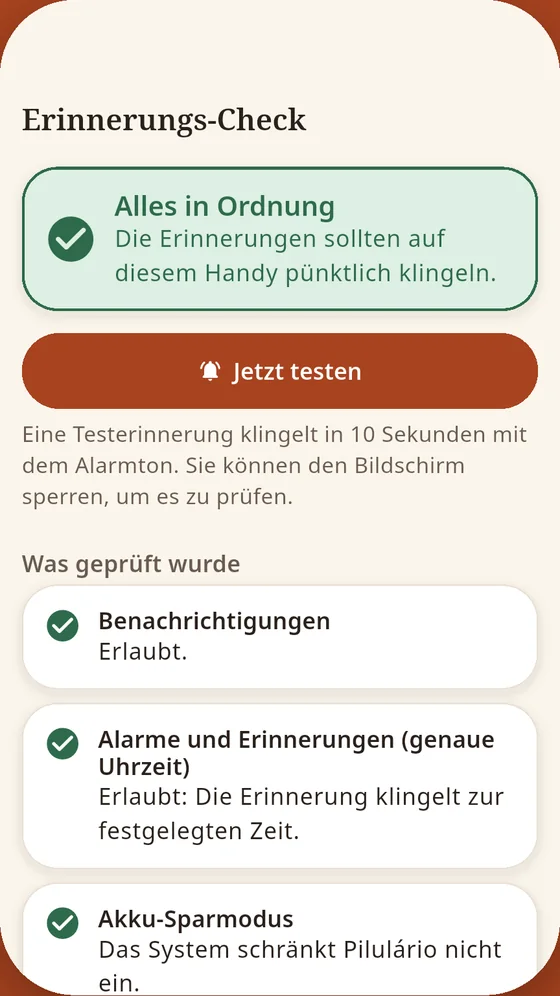
Erinnerungen, Vorrat, Verlauf und SOS sind kostenlos, ohne Begrenzung bei den Medikamenten. Der Einmalkauf „Familie und Pflege“ bringt, was das Leben leichter macht, wenn du dich um mehrere Menschen kümmerst.
Die Bildschirme der App.
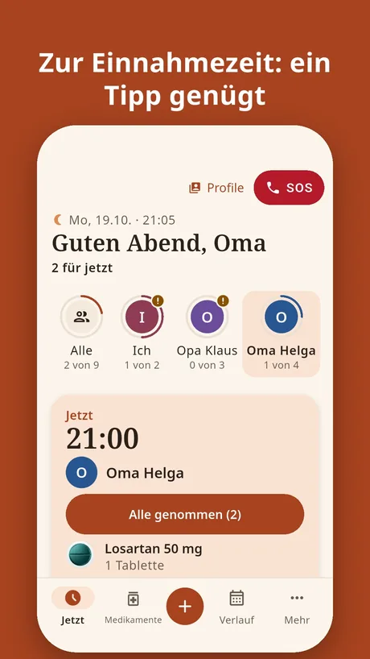
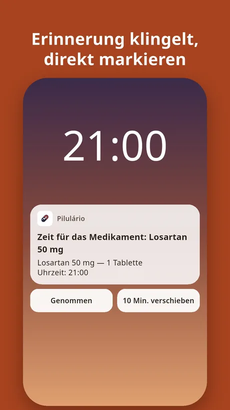
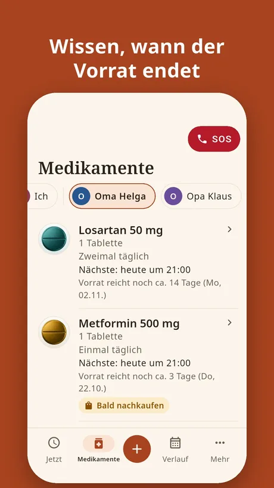
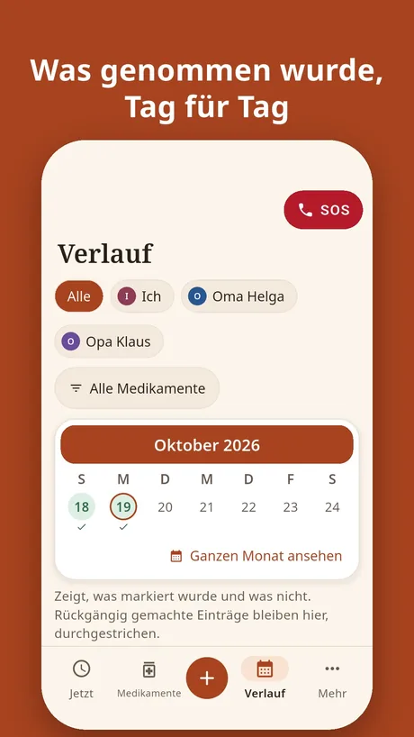
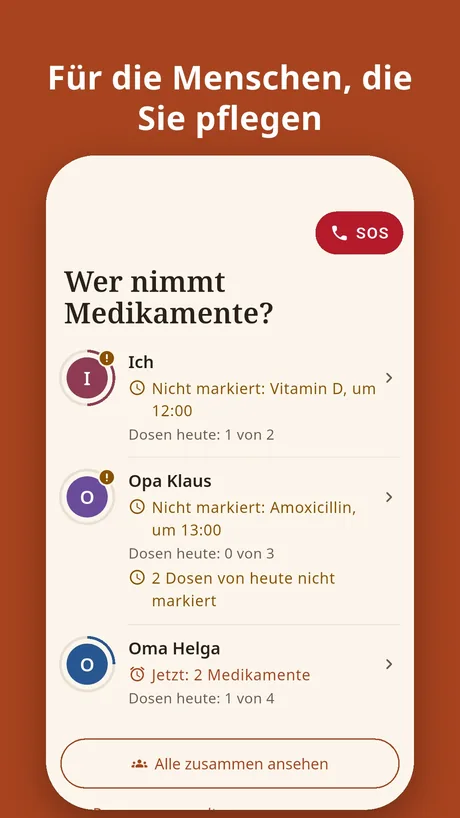
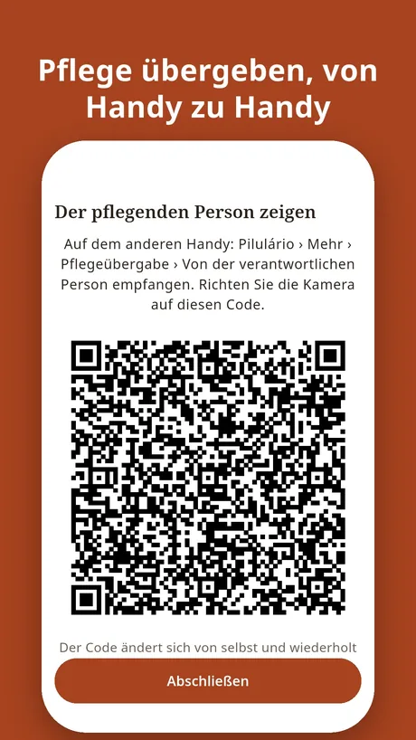
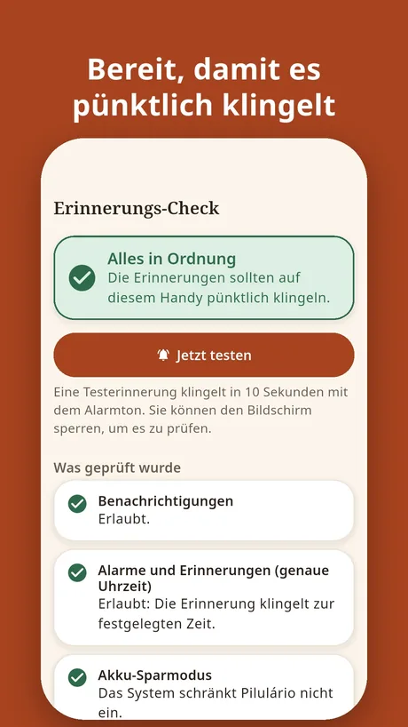
Kein Konto, keine Werbung und keine Datenerhebung. Pilulário nutzt kein Internet: Was du eingibst, bleibt auf deinem Gerät und verlässt es nur, wenn du eine Übersicht teilst, die Sicherung exportierst oder die Pflege an ein anderes Handy übergibst.
Ja. Wecker, Vorrat, Verlauf und SOS sind kostenlos, ohne Begrenzung bei den Medikamenten. Der Einmalkauf „Familie und Pflege“ bringt mehrere Personen, die Pflegeübergabe, Notizen und den Modus „Erweitert“. Kein Abo und keine Werbung.
Ja. Die App nutzt kein Internet: Erinnerungen, Daten und Pflegeübergabe funktionieren mit dem Handy offline. Nur der Kauf läuft über den Store.
Nein. Es gibt keine Registrierung. Um die Daten auf ein neues Handy zu bringen, exportiere die Sicherung als Datei.
Öffne den „Erinnerungs-Check“: Die App prüft die Berechtigungen für Benachrichtigungen, Wecker und Akku und zeigt, was einzustellen ist. Du kannst sofort eine Test-Erinnerung auslösen.
Nein. Pilulário ist eine Erinnerungshilfe: kein Medizinprodukt, schlägt weder Medikament noch Dosis oder Uhrzeit vor und ersetzt nicht den Rat deiner Ärztin, deines Arztes oder deiner Apotheke.